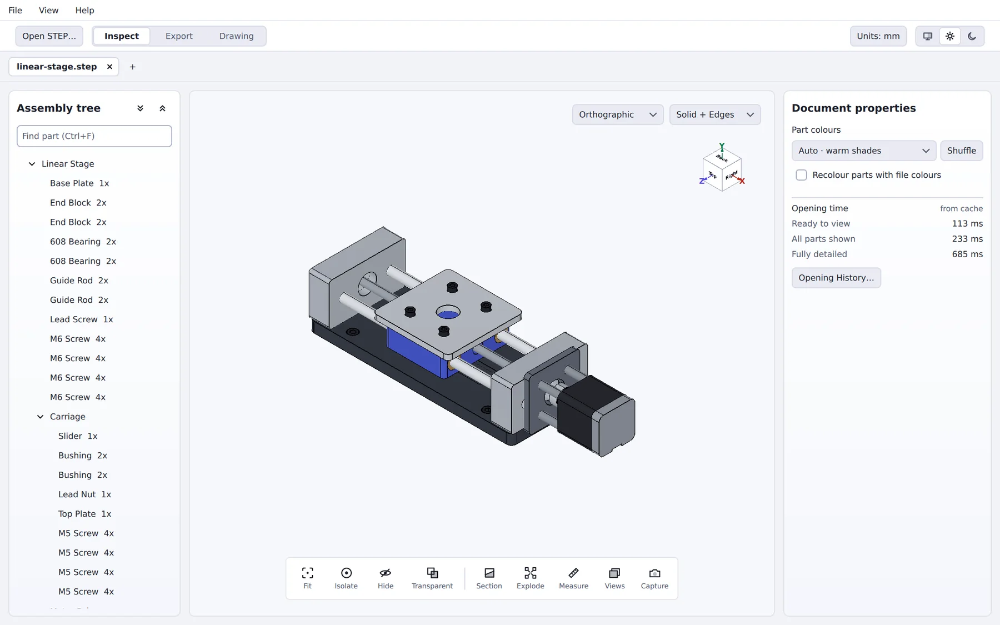

Open a STEP file. Send only the parts that matter.
Loupe is a free desktop STEP inspector for engineers. Review an assembly, measure and section it, then export just the parts a vendor or prototype shop needs, as 3D files or as 2D drawings a cutter can run.

Three workspaces, one file
Inspect
Understand an assembly quickly, without a full CAD seat.
- Search, isolate, hide or ghost any part
- Measure edges, faces, radii, angles and volume
- Section on any axis or face, with capped cuts
- Exploded views, saved views, mass by material
Export
Pick parts into an export bucket and write each as its own file.
- Separate STEP or STL files, named your way
- Strip parts and re-save the rest as one STEP
- Every output validated and written atomically
Drawing newer
Project a part to a 2D drawing at true 1:1 scale, for cutting or quotes.
- DXF, SVG or PDF output
- Cut, Silhouette and Technical modes
- True arcs and circles, not faceted curves
Opening it the first time
Loupe isn't code-signed yet, so your system will warn you the first time you open it. Unzip the download, then:
macOS
If macOS says Loupe “is damaged”, it's blocking an unsigned download. In System Settings → Privacy & Security, click Open Anyway, or run the Open Loupe (first run) helper that comes in the zip.
From Terminal: xattr -dr com.apple.quarantine Loupe.app
Windows 11
Run Loupe.exe. If SmartScreen warns about an unrecognized publisher, choose More info → Run anyway. Keep the unzipped folder together, since Loupe loads its runtime from it.